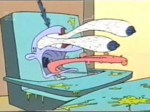
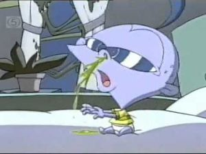
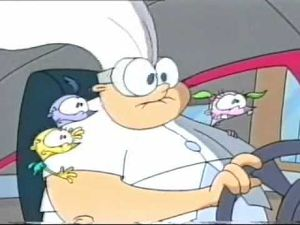
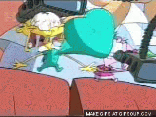
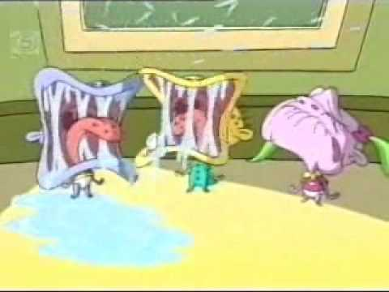

Los Megabebés
 De: La Frikipedia, la enciclopedia extremadamente seria.
De: La Frikipedia, la enciclopedia extremadamente seria.
De la serie Programas de TV:
Adivina de
que está hecho el letrero.
| Idioma original:
|
Cucú tras tras.
|
| Creador:
|
11 cadenas perpetuas consecutivas.
|
| Duración:
|
Gugugu tata.
|
| No. Episodios:
|
Agugú guaaaa.
|
| No. Temporadas:
|
Ñaaaaaa.
|
| ¿Aún se transmite?:
|
 Prohibida su emisión. Prohibida su emisión.
|
| Género:
|
Humor asqueroso.
|
| Nivel de frikismo:
|
½√π³.
|
| Películas:
|
No.
|
Se recomiendo no comer mientras lo mires.
Los Megabebés, Mega Babies en VH (Versión Horiginal), es un cruce entre Rugrats y Las Supernenas una serie que trata de unos bebés con superpoderes y su niñera pederasta.
En la serie se tratan temas de bebés, como comer tierra, pero no otros temas de bebé, como chupar teta.
A parte de su vida cuotidiana, a ratos sí y a ratos también, estos bebés usan sus poderes para enfrentarse a hordas de villanos asquerosos, de forma asquerosa, ya sea asfixiando a sus enemigos con sus propias heces, como lanzando mocos a velocidad luz.
Origen de sus poderes
Una cálida noche, en un orfanato, mientras los tres bebés Buck, Derrick y Meg dormían y su cuidadora Nana dormía en su turno de vigilancia, 139 planetas se alineaban, creando un rayo radioactivo que impactó justo en el edificio, dando poderes bestiales a los tres bebés y estirándole la cabeza a la niñera. Desde entonces, serían conocidos como Los Megabebés. Nótese que el prefijo Mega- es de mayor calibre que el prefijo Super-, por lo tanto, se puede deducir que son más fuertes que Las Supernenas o Superman.
Teoría alternativa
Otra teoría dice que los tres bebés son un experimento del Profesor Utonium, anterior a la creación de Las Supernenazas. Según esto, El profesor, antes de descubrir que podía mezclar la Sustancia X con cosas bonitas y demás, provó a emborracharse con la sustancia y de lo que vomitó el día siguiente, estando de resaca, dió origen a Los Megabebés.
Personajes
 Buck sufriendo efectos secundarios al mezclar amfetas con LSD
- Buck (Traducción: Dólar): Bebé azul, es el guay de la pandilla, tan guay que tiene problemas con la droga (y con su mafia también). Suele llevar algo de mierda escondida en el pañal, pero solo para consumo propio.
 Nótese como la coca le destruyó la nariz
- Derrick (Traducción: Grúa): Bebé amarillo, color debido a problemas de hígado, ya a su joven edad necesita de transplantes de hígado. También sufrió un derrame cerebral y por eso moquea siempre.
- Meg (Traducción: Meg): Bebé rosa, posiblemente es el bebé de Meg Griffin. Le gusta abrazar gatitos y pollitos hasta matarlos por asfixia. Suele ser la que más llora, aunque también la que mas pega.
 Nana huyendo de los federales
- Nana: Cuidadora de los tres bbs, o más bien ellos cuidan de ella. Tiene problemas con el alcohol y fue acusada de pedofilia, pero se escapó con los tres bebés a vivir "aventuras".
Megapoderes
- Desproporcionalidad corpórea: Esta habilidad la han tenido siempre, pues bien, poseen un reducido cuerpo para la cabeza que tienen.
- Musculatura extrema: Parecen unos bbs blandenguchos y escualidos, pero cuando les quitas el sonajero sacan unos brazos de culturista y el ostión que te llevas te deja con menos dientes de los que tienen ellos.
Advertencia, a partir de aquí los siguientes poderes son asquerosos, no se recomienda leerlos a no ser que seas asqueros@.
- Megamocos: Habilidad para sacar quinientos quilos de mocos de su diminuta nariz, para después, lanzarlos contra sus enemigos, o a cualquiera para divertirse.
- Megacera del oído: Ídem de lo anterior pero con cera del oído en vez de mocos.
- Megalegañas: Deja que piense... Oh!, sí, ídem de lo anterior.
- Mega<inserte nombre del fluido corporal>: Lo mismo de antes.
- Megadiarrea: ...tienen pañales marca Durex, que aguantan la cantidad ingente de materia fecal que excretan, así que se les amontona dentro del pañal haciendo que se eleven, útil para cuando quieren llegar a algún sitio alto.
Esquema de episodio
 Nótese el gigantismo de muchos de sus órganos.
- Los tres bebés hacen cosas de bebés pero con superpoderes asquerosos, ya te lo puedes imaginar, aunque se recomienda que no te lo imagines.
- Unos monstruos amenazan la ciudad
de Townsville, destruyendo cosas y causando el caos.
- Los bebés, con algo de ayuda de la cuidadora (cambiándoles los pañales y dándoles el biberón) acaban con los enemigos, de forma asquerosa, destruyendo cosas y causando el caos.
- Todo vuelve a la normalidad (los ciudadanos reconstruyen la ciudad para que vuelva a ser destruida o cubierta completamente de mocos y otros fluidos corporales en el siguiente episodio).
Cosas que podrás ver en esta serie
- Excrementos.
- Mocos.
- Legañas.
- Pañales usados.
- Llantos.
- Flatulencias.
- Vómitos (el tuyo y el de los personajes).
- Eructos.
- Sudor.
- Baba.
- Lágrimas.
- Peste.
- Orina.
- Mugre.
- Monstruos espachurrados.
- Papilla.
- Bebés.
- Trolls.
Pederastas.
Que no puedes ver en la serie
 Castigados sin bibe. Sus llantos dejan sordos a cualquiera.
- La paz en el mundo.
- Pudor.
- Decencia.
- Respeto mutuo.
- FBI.
- KGB.
- BYOB.
- URI.
- SGAE.
- CSI.
- CIS.
- CIA.
- ASS.
- ASCII.
- MIB.
- Ninguna autoridad que proteja a los ciudadanos.
- Pañales sin usar.
- Gente tomándose la limpieza e higiene en serio.
Preguntas tontas obvias
- ¿Tan megapoderosos son como para destruir un ejército de monstruos, pero no saben valerse por si mismos para cambiarse el pañal y esas cosas?
- ¿Sus padres les abandonaron por ser deformes?
- ¿Como es que los bebés no tratan de buscar a sus padres?
- ¿Que
puta ostia comen para cagar tanto?
- ¿El rayo les dio megafuerza a los bebés y megaestupidez a la niñera?
Autor(es):
- Fordus
- Harry El del Pote
- Juansimat
- LosMegabebés
Frikipedia 2005-2016, Licencia
GFDL 1.2 - Extraído por FrikiLeaks